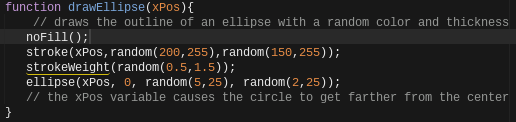
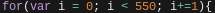
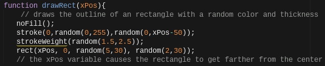
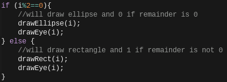

What is the project and how does it work?
This project is called generative art. True to the name, the final product of the class consists of an interact page in which certain shapes follow a pattern that changes their positioning, size, and color. To create this page, javascript was used. Javascript is a programming language based on objects and object interaction within web pages. In the project, I used javascript to create ellipses, rectangles, and lines. I would then specify certain aspects of the object, like the width, height, x position, and y position. However, I would substitute some of these amounts for variables, that increased or decreased over time, creating patterns on the screen.
What are some specifics of Javascript?
As said above, javascript focuses on objects and the operations of them. The first object to create was an ellipse. This is created by writing ellipse(x, y, w, h); The letters x, y, w, and h are substitutes for values that one can input. The x and y are the x position and y position relative to the top left corner of the screen which is 0,0. The w and h are the width and height of the ellipse. So, if one were to create an ellipse 20 pixels to the right and 20 pixels down from the top of the page, and 30 pixels wide and 30 pixels tall, they would write ellipse(20, 20, 30, 30);. However, this would only create one ellipse, and generative art would require a pattern of sorts. This is where variables come in. Variables are similar to boxes because they store a certain value. They can also be compared to a pointer or arrow because they point to a certain value as being true. To create a variable, one must write var variableName = 0;. Therefore, to create a pattern, one must first define the variable and assign it a value, then increment or decrement the variable, like so variableName = variableName + 1; or variableName +=5; and if the variable is only increasing by one, variableName++;. I used this property in a for loop to create my spiral. To make the spiral, I created a function, called drawEllipse, with the parameter xPos. Inside the function, I created an ellipse, but with xPos written as the x position, instead of a stationary number. Then, outside the function, I created a for loop. A for loop is written like for() {}. Within the parenthesis, first one writes the initiator, something that starts the loop, then the condition, something that must be true in order for the loop to continue, and then the incrementor or decrementor, how much the variable in the loop is increasing by. In this case, I wrote (var i = 0; i < 550; i++), meaning the loop would start when i was 0, stop when i was 549, and i would be increasing by 1. Inside the loop (the curly brackets), I wrote drawEllipse(i);, meaning that i was an argument that would be transferred to the parameter xPos. So, any xPos in the function drawEllipse would be equal to the variable/argument i. After the ellipse is drawn, it will rotate by the mouse position. This is because after writing drawEllipse(i); in the for loop, I wrote rotate(mouseX);. This meant that the loop would continue to print an ellipse whose positioning from the center of the screen(because outside the loop I wrote translate(width/2,height/2); which causes the ellipse to return back to the center of the screen) would increase by one, and then rotate by the number the mouse was at. Then, it would again return to the center, the distance from the center would increase again by 1, the ellipse would print, and it would rotate again. This is how the ellipse was written into a spiral.

What choices did you have to make and how did you go about making them?
In javascript, there are many organization tools one can use in order to make managing and changing aspects of the code easier. In the art piece, the ellipses and rectangles alternate after each other with an if else statement. If the remainder of i/2 is equal to 0, an ellipse will be created. If the remainder is not 0, a rectangle will be printed. In the beginning, I coded all of the aspects of the ellipse and rectangle, including the stroke, fill, and stroke width into the if else statement. However, this proved to be difficult and unorganized to change parts of the code, as all of the code was crowded together. This is why I chose to use functions to separate my ellipse and rectangle from the if else statement. I did this by creating a function called drawEllipse and drawRect. Inside the functions were all of the visual parts of the ellipse and rectangle. I then inputted these into the if else statement,
making it much easier to understand and cleaner to look at.

How has this project changed your connection and understanding of Javascrpt?
My previous experience with Javascript was in a game programming class. During that time, I learned about for loops, functions, and conditionals also. However, I used these all in a video game environment which did not interest me as much, as I did not play video games. In the class, I used javascript more to make objects appear, have them affect other objects, make objects stationary and nonstationary, and give a character an objective that they would be able to reach. This coding consisted of many complicated and long lines of code that did not stick in my head, making me believe that coding was not for me. However, this project has changed my view on javascript and all possibilities of programming languages. The ability to make something pleasing and interesting to the eye was much more enjoyable to me. It was also more understandable, as the art only required simple code blocks put together with conditionals and loops to make intriguing visuals. I now understand that coding has many different applications.
What is one thing you would change if you had more time?
While I am very pleased with the final product I created, I understand that there are many improvements that could be made. Currently, the angle that the ellipse and rectangle rotate by is decided by the x positioning of the mouse on the screen. The issue with this is sometimes it doesn’t create very distinct and interesting patterns. If I had more time, I would change the angle to come from an array of interesting patterns and make the interactive part affect either the shape or the color of the art.